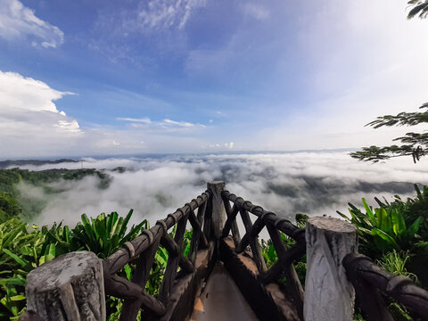

Bandarban (Bengali: বান্দরবান, Chakma: 𑄝𑄚𑄴𑄘𑄧𑄢𑄴𑄝𑄚𑄴) is a district in South-Eastern Bangladesh, and a part of the Chittagong Division.[5] It is one of the three hill districts of Bangladesh and a part of the Chittagong Hill Tracts, the others being Rangamati District and Khagrachhari District. Bandarban district (4,479 km2) is not only the most remote district of the country, but also the least populous (population 388,000).[6] There is an army contingent at Bandarban Cantonment.
